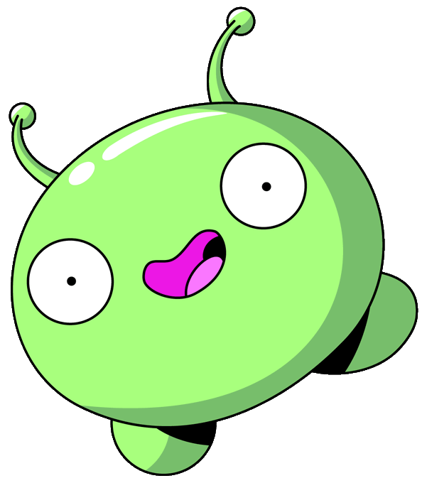
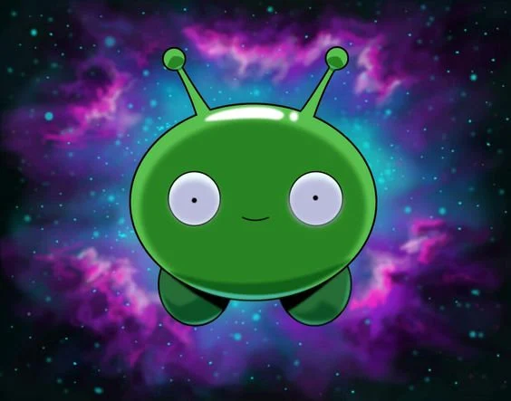

<!DOCTYPE html> 
<html lang="pt-br">
<head>
    <meta charset="UTF-8">
    <meta name="viewport" content="width=device-width, initial-scale=1.0">
    <title>Final Space</title>
    <link rel="stylesheet" href="css/meuestilo.css">
</html>
    <body>
        <header class="cabecalho">
            <div class="logo" id="logo">
                
        </div>
        <nav id=menu>
            <ul>
                <li><a href="index.html"> = Personagens = </a></li>
                <li><a href="Enredo.html"> = Enredo = </a></li>
                <li><a href="Sinopse.html"> = Sinopse = </a></li>
                <li><a href="Curiosidades.html"> = Curiosidades = </a></li>
                <li><a href="Antagonistas.html"> = Antagonistas = </a></li>
            </ul>
        </nav>
    </header>
    <main>
        <section id="figure">

            <h1 style="color: rgba(120, 50, 233, 0.815);" class="titulo">10 Curiosidades</h1>
                <h2>1</h2>
                    <p>A origem da série remonta a 2010. Ano em que Olan Rogers anunciou "Gary Space" em seu canal no YouTube . O que seria uma série desenhada à mão em 10 partes.
                    
                    <h2>2</h2>
                    <p>Por fim, em 2016 foi lançado o curta-metragem “Final Space” , que serviu de piloto da série. Embora existam muitas diferenças com a trama, por exemplo Gary era um piloto da Infinity Guard e não um prisioneiro. Personagens também foram eliminados e outros foram redesenhados.
                    
                    <h2>3</h2>
                    <p>A série tem uma forte semelhança com Red Dwarf , de 1988 , cujo enredo se concentra nas aventuras do último humano vivo e seus amigos, que incluem um gato evoluído, o holograma de um oficial e um supercomputador. O protagonista desperta de sua hibernação 3 milhões de anos depois a bordo da nave Red Dwarf, quando não sobrou ninguém... aparentemente.
                    
                    <h2>4</h2>
                    <p>Os personagens Fox e Ash fazem a Dança da Fusão quando são apresentados, homenageando Dragonball Z.
                    
                    
                    <h2>5</h2>
                    <p>O personagem HUE , companheiro e covil de Gary , é inspirado no computador de inteligência artificial HAL 9000 , do filme 2001: Uma Odisséia no Espaço (1968).
                    
                    
                    <h2>6</h2>
                    <p>As pequenas naves usadas pela Guarda do Infinito lembram as naves da série de ficção científica Battlestar Galactica.
                    
                    
                    <h2>7</h2>
                    <p>Esta não é a primeira vez que David Tennant (Lord Commander) viaja ao espaço, já que já atuou em Doctor Who.
                    
                    
                    <h2>8</h2>
                    <p>Olan Rogers confirmou que Clarence é bissexual e disse que revelaria mais dois personagens LGBTQ nas temporadas 3 e 4, caso a série fosse renovada mais uma vez.
                    
                    
                    Crédito: Natação Adulto
                    <h2>9</h2>
                    <p>Olan Rogers revelou que Gary tem 30 anos, Quinn tem 32, KVN  5 e Avocato 512. Embora a idade de Gary seja contraditória no episódio The Sixth Key , onde ele revela ter 32 anos.
                    
                    
                    <h2>10</h2>
                    <p>Originalmente como " Gary Space"   foi apresentado para o Cartoon Network . O TBS finalmente deu luz verde, mas para sua segunda temporada mudou para Adult Swim, onde Rick e Morty vai ao ar .</p>

                <div class="caixa-img">
                    <figure>
                        
                        <figcaption style="color: rgba(180, 3, 180, 0.87);"></figcaption>
                    </figure>
                </div>

        </section>